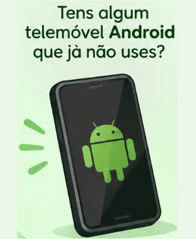
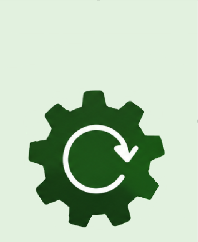

Queres participar da campanha, mas não sabes como?
Descobre algumas formas de ajudar e fazer a diferença!





Objetivo da Campanha
A campanha Eco Code Mobile tem como principal objetivo sensibilizar a população para a importância da preservaçãodo meio ambiente, incentivando hábitos mais sustentáveis.
Pretendemos promover a reciclagem, reduzir a utilização de plástico, poupar água e energia e incentivar a proteção dos espaços naturais.
Datas e Ponto de Recolha
Datas: De [Por defenir] até [Por defenir]
Horário: [Por defenir]
Local: PBX, junto à Secretaria
Quem pode participar:Alunos, E.E, Professores, funcionários e restante comunidade escolar.
Prepara o teu telemóvel!
Antes de entregares o teu telemóvel, segue estes passos:
1. Cópia de segurança
Guarda as tuas fotografias e ficheiros importantes.
2. Remover contas
Remove as tuas contas pessoais do telemóvel.
3. Reposição de fábrica
Repõe o telemóvel para os dados de fábrica.
4. Retirar cartões
Retira o cartão SIM e o cartão de memória.
Atenção! A reposição de fábrica elimina permanentemente os dados. Faz primeiro uma cópia de segurança. Se não souberes fazer os passos podemos ajudar.